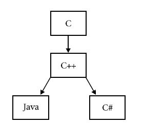

Why C#?
Motivation
- Java lacked cross-language interoperability (mixed-language programming): ability for code produced by one language to work easily with code produced by another
--needed for creation of large distributed software systems
--needed for programming software components
Windows by far the most widely used OS
- Yet Java lacked direct support for Windows; could not fully integrate with Windows platform
Object Oriented
Component Oriented
Classification
A multi-paradigm programming language:
Imperative
Declarative
Functional
Generic
Strongly typed
Object Oriented
Component Oriented
Creation of C#
Around 1997, Microsoft started a project internally known as Project Lightning
Codename of C# was 'Project Cool', a 'clean-room' implementation of Java
Microsoft also worked on J++, a borrowed version of Java
J++ added and removed implementation features of Java; Sun sued Microsoft
Context and Influencers
C# directly descended from two of the most successful computer languages: C and C++
From C, it derives its syntax, many of its keywords, and most of its operators
It builds upon and improves the object model defined by C++
C invented in 70s: most widely used structured programming language of the 1980s
C was unmanageable for large programming projects
C++ (1979) Bjarne Stroustrup: most widely used programming language by 2000
Java (1991) Sun Microsystems and James Gosling; syntax and philosophy derived from C++; innovations driven by changes in computing environment: the Internet and need for portability across connected machines
Solved problem of portability (rise of Internet); create cross-platform, portable code = rapid acceptance
Basic C# Examples
Hello World
using System;
public class Program
{
static void Main(string[] args)
{
System.Console.WriteLine("Hello world!");
}
}
Evolution of C#
C# has rapidly evolved since intial release in 2000
V1.0: 2000 initial alpha release
V2.0: added Generics: made it possible to create type-safe, reusable code
V3.0: LINQ (Language Integrated Query, for database-like queries), and Lambda expressions (functional-style syntax using the => operator)
V4.0: Named and Optional arguments; Dynamic keyword (situations where datatype is obtained at runtime); Parallel programming (.NET Task Parallel Library)
V5.0: Asynchronous methods, Caller info attributes
V6.0: String Interpolation, Constructor type inference, Succinct syntax for primary constructors